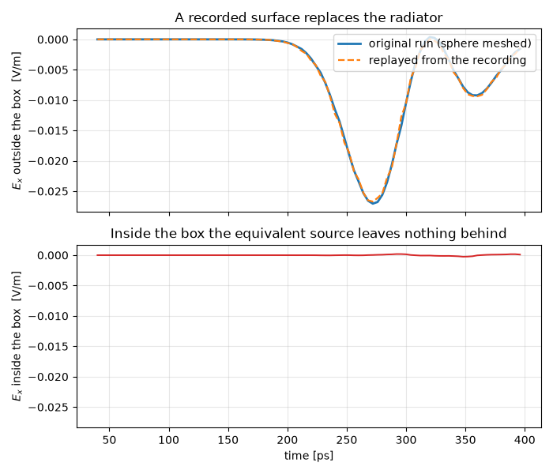

Note
Go to the end to download the full example code.
Field sources: simulate a radiator once, reuse it anywhere#
A radiator rarely sits alone. The antenna goes on a mast, the connector into a housing, the scatterer into a scene — and each time the whole thing is meshed together, the fine structure of the radiator sets the cell size for a domain that is mostly empty air.
The equivalence principle offers a way out. The tangential \(\mathbf{E}\) and \(\mathbf{H}\) on a closed surface stand for everything the surface encloses: replayed on that surface, they radiate the same field outwards and nothing inwards. So the radiator can be simulated once, on a small grid of its own, and its surface recording used as a source wherever it is needed — at any position, and turned by any multiple of 90°.
This page records the field scattered by a PEC sphere and replays it in an empty model. The recipe is the same whatever sits inside the box. Two numbers say whether the replay is faithful: the field outside the box must match the original run, and the field inside must vanish, because the surface has taken the radiator’s place.
import matplotlib.pyplot as plt
import numpy as np
import magnelio as mio
from magnelio import geo, monitors, signals, sources
F_MAX = 15e9
L = 30e-3 # domain edge [m]
R = 3e-3 # sphere radius [m]
TFSF = ((-5e-3,) * 3, (5e-3,) * 3) # plane-wave box, hugging the sphere
BOX = ((-8e-3,) * 3, (8e-3,) * 3) # Huygens box, outside it
PROBE = ((-1e-3, -1e-3, 9.5e-3), (1e-3, 1e-3, 11e-3))
INSIDE = ((-1e-3,) * 3, (1e-3,) * 3)
TIMES = np.arange(40e-12, 400e-12, 4e-12)
T_END = 410e-12
The model#
A sphere in air. The plane wave’s total-field box is drawn close around the sphere, so everything outside it — where the Huygens box goes — carries the scattered field alone. That matters: an equivalent source stands for what radiates from inside the box, and the incident wave does not.
def air_domain():
model = mio.GeometryModel(
boundary_conditions=dict.fromkeys(("xmin", "xmax", "ymin", "ymax", "zmin", "zmax"), "CPML"),
)
model.add(geo.Brick(origin=(-L / 2,) * 3, size=(L, L, L), material="air"))
return model
def scene_with_sphere():
model = mio.GeometryModel(
boundary_conditions=dict.fromkeys(("xmin", "xmax", "ymin", "ymax", "zmin", "zmax"), "CPML"),
)
box = geo.Brick(origin=(-L / 2,) * 3, size=(L, L, L), material="air")
ball = geo.Sphere(center=(0, 0, 0), radius=R, material="pec")
model.add(geo.Difference(box, ball, material="air"))
model.add(ball)
return model
def mesh_of(model):
return mio.Mesh.from_geometry(model, mio.MeshControl(min_nodes_per_wavelength=12), f_max=F_MAX)
def probes():
return [
monitors.MonitorFieldTime(name="out", corners=PROBE, fields=["E"], times=TIMES),
monitors.MonitorFieldTime(name="in", corners=INSIDE, fields=["E"], times=TIMES),
]
def trace(monitor_data):
"""One scalar time trace out of a small probe box."""
values = np.asarray(monitor_data["Ex"])
return values.reshape(values.shape[0], -1).mean(axis=1)
Run 1 — record the surface#
MonitorFieldSurface samples the tangential fields on the box and
keeps them as a time series. recording() hands the result over;
save writes it to a file, which is all the second model needs.
model = scene_with_sphere()
model.add_source(
sources.SourcePlaneWave(name="pw", direction=(0, 0, 1), polarization=(1, 0, 0), corners=TFSF)
)
surface = monitors.MonitorFieldSurface(name="scatterer", corners=BOX)
analysis = mio.AnalysisTD(mesh=mesh_of(model), monitors=[surface, *probes()], verbose=False)
recorded = analysis.run(
excitations=[
mio.Excitation("pw", waveform=signals.WaveformGaussian(f_max=F_MAX), amplitude=1.0)
],
t_end=T_END,
energy_stop_db=None,
)
recording = surface.recording()
print(recording)
print(
f"sample interval {recording.interval * 1e12:6.2f} ps over {recording.duration * 1e12:.0f} ps"
)
mesh | feature planes
mesh | grid lines
mesh | materials
mesh | conformal cells
mesh | PEC masks
mesh | 56 x 56 x 56 cells
SurfaceRecording(name='scatterer', faces=6, samples=50, duration=4.075e-10 s)
sample interval 7.56 ps over 408 ps
Run 2 — replay it in an empty model#
The sphere is gone. SourceFieldSurface puts the recording back
on a box of the same size; its excitation carries no waveform — the
recording is the time function — only a scale factor.
replay_model = air_domain()
replay_model.add_source(sources.SourceFieldSurface(recording=recording, name="scatterer"))
replayed = mio.AnalysisTD(mesh=mesh_of(replay_model), monitors=probes(), verbose=False).run(
excitations=[mio.Excitation("scatterer", amplitude=1.0)],
t_end=T_END,
energy_stop_db=None,
)
mesh | feature planes
mesh | grid lines
mesh | materials
mesh | conformal cells
mesh | PEC masks
mesh | 40 x 40 x 40 cells
The two numbers#
out_ref = trace(recorded.monitors["out"].data)
out_new = trace(replayed.monitors["out"].data)
inside = trace(replayed.monitors["in"].data)
peak = np.abs(out_ref).max()
ratio = np.abs(out_new).max() / peak
leak = 20 * np.log10(np.abs(inside).max() / peak)
print(f"outside amplitude, replay / original : {ratio:.3f} (target 1.00 +- 0.02)")
print(f"inside the box, relative to outside : {leak:.1f} dB (target below -30 dB)")
outside amplitude, replay / original : 0.988 (target 1.00 +- 0.02)
inside the box, relative to outside : -40.4 dB (target below -30 dB)
Both hold: the replayed field outside the box follows the original to about a percent, and the inside of the box — where the sphere used to be — stays some 40 dB down.
fig, (ax, ax2) = plt.subplots(2, 1, figsize=(7.0, 6.0), sharex=True)
t_ps = TIMES * 1e12
ax.plot(t_ps, out_ref, label="original run (sphere meshed)", lw=2.0)
ax.plot(t_ps, out_new, "--", label="replayed from the recording", lw=1.6)
ax.set_ylabel(r"$E_x$ outside the box [V/m]")
ax.legend(loc="upper right")
ax.grid(alpha=0.3)
ax.set_title("A recorded surface replaces the radiator")
ax2.plot(t_ps, inside, color="tab:red", lw=1.4)
ax2.set_xlabel("time [ps]")
ax2.set_ylabel(r"$E_x$ inside the box [V/m]")
ax2.set_ylim(ax.get_ylim())
ax2.grid(alpha=0.3)
ax2.set_title("Inside the box the equivalent source leaves nothing behind")
fig.tight_layout()

Placing it somewhere else#
position moves the box in the new model, rotation turns it.
Only multiples of 90° are available: the box is spanned by grid-node
planes, and a tilted recording would cross the target grid obliquely,
with no samples where the source is applied. A free angle raises
rather than rounding.
recording.save("scatterer.h5")
# ... in another script, another day, another model
model.add_source(
sources.SourceFieldSurface.from_file(
"scatterer.h5",
name="scatterer",
position=(0.0, 0.0, 0.25), # where the box goes now
rotation=("z", 90), # turned a quarter turn
)
)
What to watch#
The box must enclose the radiator, and only the radiator. Here the plane wave’s total-field box is drawn inside the Huygens box, so the recording holds the scattered field alone. Record the total field instead and the replay would have to conjure up an incident wave arriving from the absorber, which it cannot.
An equivalent source replays outgoing fields. That is what “everything inside the surface” means. A field passing through the box is not what the construction stands for.
A conductor must not cut a box face. It would carry current across the surface, and the recording would be short of exactly that part; the monitor warns. A ground plane is the exception — it closes a domain face, the box is left open there, and the recording then belongs in a model that continues that plane.
The sampling rate follows the field, not the setting. The default records eight samples per period at
f_max, well above Nyquist because the replay interpolates linearly in time. A field that carries energy abovef_max— anything started from a sharply localised state — needs a shorterinterval.The recording is only as long as the run. It ends where its samples end; the replay holds the last one rather than extrapolating, so let the recording run until the fields have decayed.
Draw the box close. Its size sets the cost of the recording (faces times patches times samples), which is held in memory until the run ends.
plt.show()
Total running time of the script: (0 minutes 16.463 seconds)